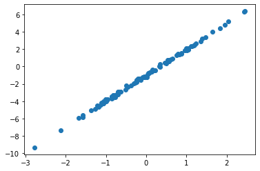
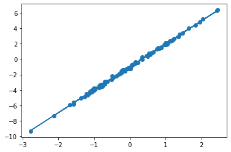

import jax.numpy as jnp
import jax
from jax import grad, jit, vmap
from jax import random
from jax import device_put15 Introduction to Jax
- Resource: https://jax.readthedocs.io/en/latest/notebooks/quickstart.html

key = random.PRNGKey(0)
x = random.normal(key, (10,))
print(x)[-0.3721109 0.26423115 -0.18252768 -0.7368197 -0.44030377 -0.1521442
-0.67135346 -0.5908641 0.73168886 0.5673026 ]size = 3000
x = random.normal(key, (size, size), dtype=jnp.float32)
x = device_put(x) # copy values back to CPUdef selu(x, alpha=1.67, lmbda=1.05):
return lmbda * jnp.where(x > 0, x, alpha * jnp.exp(x) - alpha)
x = random.normal(key, (1000000,))
%timeit selu(x).block_until_ready()1.63 ms ± 182 µs per loop (mean ± std. dev. of 7 runs, 1,000 loops each)selu_jit = jit(selu)
%timeit selu_jit(x).block_until_ready()360 µs ± 11.6 µs per loop (mean ± std. dev. of 7 runs, 1,000 loops each)15.1 Automatic differentition
grad()jax.vjp: reverse-mode vetor-jacobian productsjax.jvp: Forward-mode jacobian-vector products
15.2 Index update
x = jnp.arange(10)
y = x.at[0].set(0)jax_array = jnp.ones((5,6))
print(jax_array)[[1. 1. 1. 1. 1. 1.]
[1. 1. 1. 1. 1. 1.]
[1. 1. 1. 1. 1. 1.]
[1. 1. 1. 1. 1. 1.]
[1. 1. 1. 1. 1. 1.]]new_jax_array = jax_array.at[::2, 3:].add(7.)
print(new_jax_array)[[1. 1. 1. 8. 8. 8.]
[1. 1. 1. 1. 1. 1.]
[1. 1. 1. 8. 8. 8.]
[1. 1. 1. 1. 1. 1.]
[1. 1. 1. 8. 8. 8.]]15.3 Linear regression
import numpy as np
import matplotlib.pyplot as pltxs = np.random.normal(size=(100,))
noise = np.random.normal(scale=0.1, size=(100,))
ys = xs * 3 - 1 + noise
plt.scatter(xs, ys);
def model(theta, x):
w, b = theta
return w*x + b
def loss_fn(theta, x, y):
prediction = model(theta,x)
return jnp.mean((prediction - y)**2)
def update(theta, x, y, lr=0.1):
return theta - lr * jax.grad(loss_fn)(theta, x, y)theta = jnp.array([1.,1.])
for _ in range(1000):
theta = update(theta, xs, ys)
plt.scatter(xs, ys)
plt.plot(xs, model(theta, xs))
w, b = theta